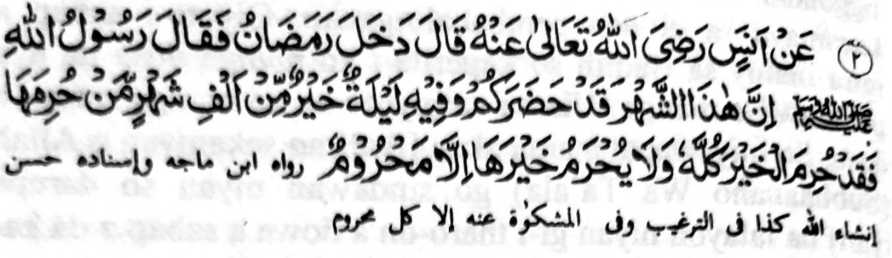
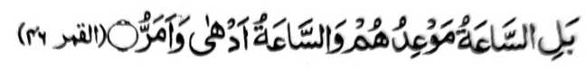

Hadith 2

Miyakathitayan ko Anas (Radhiallaho 'Anho) a pitharo iyan a miyakatalingoma so Ramadhan na pitharo o Rasulollah (Sallallaho 'Alaihi Wasallam), “Mata-an a giyangka-iya olan-olan na miyakatalingoma rekano go katatago-an sekaniyan sa satiman a kagagawi-i a tomo a di so sanggibo a olan-olan. Saden sa mapapas rekaniyan angka-iya a kagagawi-i [a di ron makanggalebek sa simba] na sabenar a miyapapas rekaniyan so langowan o mapiya. Na da a khapapas rekaniyan angka-iya [kagagawi-i] inonta so pekhawis-wisan. ”
OSAYAN
Antawa-a pen-i makazangka sa kada a ontong o tao a kena ba giyabo a kiyapapas rekaniyan o di na piyapas iyan sa ginawa niyan so mala a mapiya [a mapapadalem] ko Lailatul Qadr? Aden a manga tao a si-i ko tenday o gi-i ran kanggalebek ko pangadapan, na gi-i makathoday ko kagagawi-i si-i ko tenday o ragon. Sayana a miyakalebo-lebod so kathoday ko soled o saolan sa simba ko Allah (Subhaanaho Wa Ta’ala) a aya antap na so kakowa-a ko balas ko kalalawanan so walo polo ragon a Ibaadah. Sabap ko kada o panamar, na da den a babaya a matatago ko poso, ka opama ka aden a madadalemon a babaya, na apiya sanggibo a kagagawi-i sa simba ko Allah (Subhaanaho Wa Ta’ala) na tanto a miyakalebo-lebod. Giyangka-iya a panamar ago babaya-i kha-aden tano. Ilaya niyo so Nabi tano; ka lalayon rekaniyan den pephakisabotan a da den a patot a ipekhalek iyan ko Akhirat, go inibegay ron den so mapiya tothol ko maporo a pangkatan niyan, ogaid na si-i ko oman kagagawi-i na pekha-ilay sekaniyan ko gi-i niyan kipamayandegen ko ‘Ibaadah, taman sa so manga a-i niyan na pephamamametowan. Ped ko manga pati-is a Muslim so saba-ad ko manga Auliya a siyongkad iran angkanan a ola-ola niyan. Manga manosiya siran a lagid tano, go da a makapetharo sa ba mostahil o ba tano kapadalemi sa lagid oto a ka-ooyat ko simba; aya bo a mata-an na si-i oto matatago ko kaphakasoleda tano sangka-iya [ka-ooyat ko simba] si-i ko manga poso tano. Ilain tano so ladiyawan [a minigoris] angka-iya a phanga-aaloy a mbawata-an o Islam:
Paganay kiran so Hazrat ‘Umar (Radhiallaho ‘Anho) a sekaniyan na oriyan o kapakazambayang iyan ko 'Isha, na maling sa walay na manambayang sa mababasa gawi-i, taman ko kanega ko bang ko wakto a Sobo. Oriyan niyan na so mambo so ‘Uthman (Radhiallaho ‘Anho) a sekaniyan so oriyan o kaphowasa niyan ko kadaon-dao na lalayon sekaniyan den gi-i manambayang ko mababasa gawi-i inonta bo so maito a torog ko paganay a ika telo bagi ko kagagawi-i. Tanto a lomiyangkap a lalayon niyan pethamaten so Qur’an sa maka-isa ko sa raka’at a Sambayang. Si-i ko [kitab a] Ihya Ulumud Deen o Imam Ghazali (Rahmatullahi ‘Alaihi), na so Abu Talib Makki (Rahmatullahi ‘Alaihi) a inaloy niyan so saba-ad ko pat polo a mama a ped ko manga Tabi’in a lalayon gi-i Zambayang ko Sobo a aya abedas iran na so abedas ko kiyazambayang iran ko 'Isha. [Ma-ana da siran pakatorog ago da siran kabatali]
So Hazrat Shaddad (Radhiallaho ‘Anho) na isa sekaniyan ko manga Sahabah a lalayon gi-i thoday ko mababasa gawi-i taman ko Sobo, na go lalayon niyan gi-i tharo-on:
''Ya Allah (Subhaanaho Wa Ta’ala)! so kalek aken ko Jahannam na miyabogao niyan so torog aken.” So Aswad bin Yazeed (Radhiallaho ‘Anho) na liyo ko kapephakatorog iyan sa maito ko pageletan o ‘Maghrib ago so 'Isha, na lalayon niyan ipephamayandeg so ‘Ibaadah igira Ramadhan ko tenday o mababasa gawi-i. Miyapanothol makapantag ko Saeed bin Musayyib (Rahmatullahi ‘Alaihi) a si-i ko soled o miyaka-lima polo ragon, na ipephamayandeg iyan so Sambayang ko wakto a Isha ago si-i ko Sobo ko melagid a abedas. Aden pen a miyabaloy a ladiyawan o Sila bin Ashyam (Rahmatullahi ‘Alaihi) a sekaniyan na oriyan o kiyasimba-a niyan ko Allah (Subhaanaho Wa Ta’ala) ko miyababasa gawi-i na lalayon niyan gi-i tharo-on ko kapita iyan, “Ya Allah (Subhaanaho Wa Ta’ala)! na di raken patot o ba ko Reka pangeniya so [-Jannat [Sorga] ogaid na aya bo a phangenin ko Reka na pakalidasa ko Ngka ko Jahannam [Naraka].
So Hazrat Qatadah (Radhiallaho ‘Anho) na lalayon niyan pethamaten so Qur’an ko soled o telo ka kagagawi-i ko Ramadhan ogaid na si-i ko mori a sapolo gawi-i, na lalayon niyan pethamaten so Qur’an oman kagagawi-i. Makapantag peman ko Imam Abu Hanifah (Rahmatullahi ‘Alaihi) na lomiyangkap a si-i ko soled o pat polo ragon, na gi-i Zambayang ko 'Isha ago so phakatondog a wakto a Sobo a melagid a Abedas. Kagiya iza-an o manga bolayoka iyan o anda manaya-i kiyagaga-a niyan ro-o a bager, na minisembag iyan, “Giya-i initanma ko tinibaba aken a pangeni ko Allah (Subhaanaho Wa Ta’ala) sabap ko manga Soti a Ngaran Niyan.” Aya bo a ipethorogon na maito ko kapolid a alongan, a makapantagon [a torog] na miyatharo iyan “Si-i sa Hadith na inisogo reketano a kapakatorog tano’ron sa maito.” [Aya ma-ana niyan, na apiya so torog iyan ko kapolid a alongan na aya ni’at iyan non na so kapagonoti niyan ko Sunnah]. Sekaniyan a Imam Abu Hanifa (Rahmatullahi ‘Alaihi) na lalayon sekaniyan penggora-ok sa mala igira pembatiya-an niyan so Qur'an sa so manga siringan niyan na kiyatago-an siran non kapedi. Miyaka-isa na gomiyora-ok sekaniyan miyababasa gawi-i, ka masa a gi-i niyan kakhaso-kasoya ko:

"Kena ka so Bangkit-i diyandi kiran, ka so Bangkit na lawan a maregen, go lawan a mapa-it.’[Surah Al-Qamar:46]
So Ibrahim bin Ad-ham (Rahmatullahi ‘Alaihi) na minitabolog sekaniyan sa si-i ko soled o Ramadhan na di sekaniyan den phakatorog melagid o kadaon-dao odi na kagagawi-i. So Imam Shafi’i (Rahmatullahi ‘Alaihi) na lalayon niyan pethamaten so Qur’an sa makanem polo ko manga kadaondao ago manga kagagawi-i ko Ramadhan. Liyo si-i na madakel a manga Auliya a tanto iran a siniyap so sogo-an angkoto a Ayaat sa Qur’an:
“Na da a kiya-adena Ko ko manga Jinn ago so manga Manosiya rowar sa an Ako iran mazoa-soat.” [Surah Adh-Dhariyat:56]
Saba-ad baden na-i ko manga ladiyawan ko siran a miyanga-oona tao. Apiya imanto a masa na madakel a pezimba-an niran so Allah (Subhaanaho Wa Ta'ala) sa lagid doto sa kathotomangked. Apiya sangka iya a masa a kanggaya-gomaya ago kandosa, aden a manga tao a pezongkaden niran so maporo a ladiyawan a Rasulollah (Sallallaho ‘Alaihi Wasallam), go da iran non paka-alanga so manga kapephangawiyagan niran ko donya o di na so kapakadadaya iran. So Rasulollah (Sallallaho ‘Alaihi Wasallam) na miyatharo iyan, “Pitharo o Allah (Subhaanaho Wa Ta’ala): ‘Hay mbawata-an o Aadam, na senggay ka sa oras a simba Raken, ka ibegay Aken reka so sengenin ka go papasen ko reka so kamiskin. O sopaka ngka in, na ipeno Aken reka so manga awida akal ago atas tanggongan, go di Aken kenetan so kamimiskini reka ago so kasisikoti reka.” Ay kadakel a kiya-ilaya tano ko kabebenar angka-i. Aden a manga tao a aya bo a pezimba-an niran na so Allah (Subhaanaho Wa Ta’ala), a da a mathatangked a gi-i ran ipaningkawiyagen, ogaid na da siran karegeni.